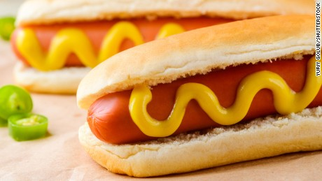

Today I will explain how to cook my favorite food. Hot dogs! I love hot dogs because they are the perfect food for a snack in the summer. When I go on a summer picnic I always make sure to bring hot dogs. Hot dogs are always better with condiments. My favorite condiment is Ketchup, so that's what i will be using in my recipe today. But enough talk already, let's get right into the recipe.

For this recepe you will need: